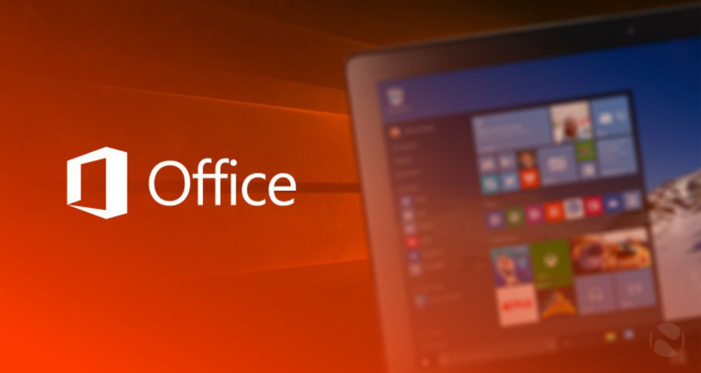
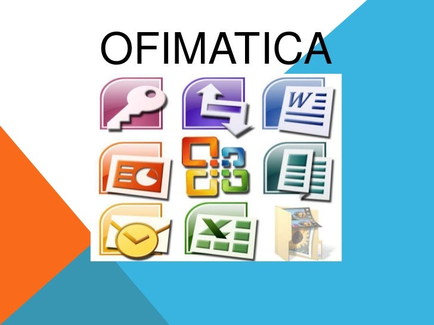
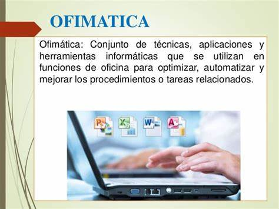

Microsoft office, es un conjunto de herramientas destinadas a la creación, edición, almacenamiento y transmisión de información desde computadoras personales. Permite optimizar y automatizar las actividades habituales de cualquier oficina (o en nuestro caso, un consultorio). Las nuevas versionas ya incluyen la posibilidad de ser utilizadas inclusive desde dispositivos móviles como tablets o smartphones.
Existen diversas versiones desde la original que fuera lanzada en 1989 para computadoras Apple Macintosh, hasta las últimas versiones 2016 o 365.

Cada una de las herramientas del conjunto tiene una función, Las más conocidas son:
permite la creación y edición de todo tipo de documentos, tanto formales como informales.
permite la realización de cálculos simples o complejos (mediante el uso de fórmulas) y la generación de gráficos asociados a dichos cálculos.
permite la creación de presentaciones visuales (diapositivas) con la inclusión de texto, imágenes, sonidos o videos.
permite la administración del correo electrónico, manejo de agendas y contactos.

Otras herramientas quizás menos conocidas son:
permite el manejo de grandes volúmenes de información contenidos en bases de datos.
facilita la toma de notas caseras o para reuniones, la organización y su distribución.
permite la programación y seguimiento de proyectos.
permite editar publicaciones o sitios Web
permite crear diagramas (por ejemplo organigramas)
Cada persona puede utilizar estas herramientas para facilitar su actividad cotidiana. Por ejemplo un médico podría utilizar Microsoft Word para escribir un trabajo científico o una tesis ya que la herramienta cuenta con correcciones y autotextos que permiten acelerar y mejorar dicho trabajo. Le permitirá imprimir y corregir ortografía, insertar imágenes, insertar tablas, bordes, diversos formatos, colores y tipos de letra para darle un acabado más profesional. Así también Excel tiene funciones adecuadas para administradores, contadores y todos aquellos que quieran, por ejemplo, manejar sus finanzas personales. Esta herramienta permite el uso de funciones estadísticas y aritméticas avanzadas para analizar grandes volúmenes de información y generar gráficos para poder representar los resultados. PowerPoint permitirá, entre otras cosas, la creación de las diapositivas que sintetizan el trabajo científico para exponer en un ateneo o congreso mediante funciones simples e intuitivas, recurriendo a imágenes o videos que expresen claramente las ideas. Encontrándose así una variedad muy amplia de procesos en cada una de las funciones; funciones que han aumentado a lo largo de las versiones.